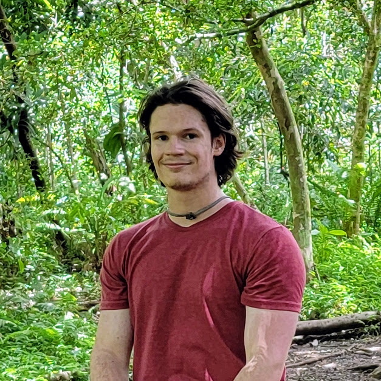
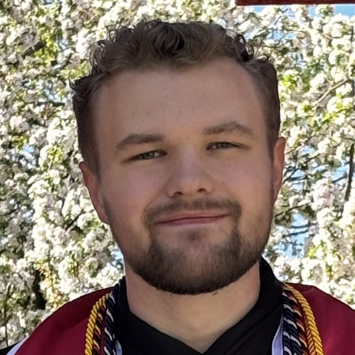
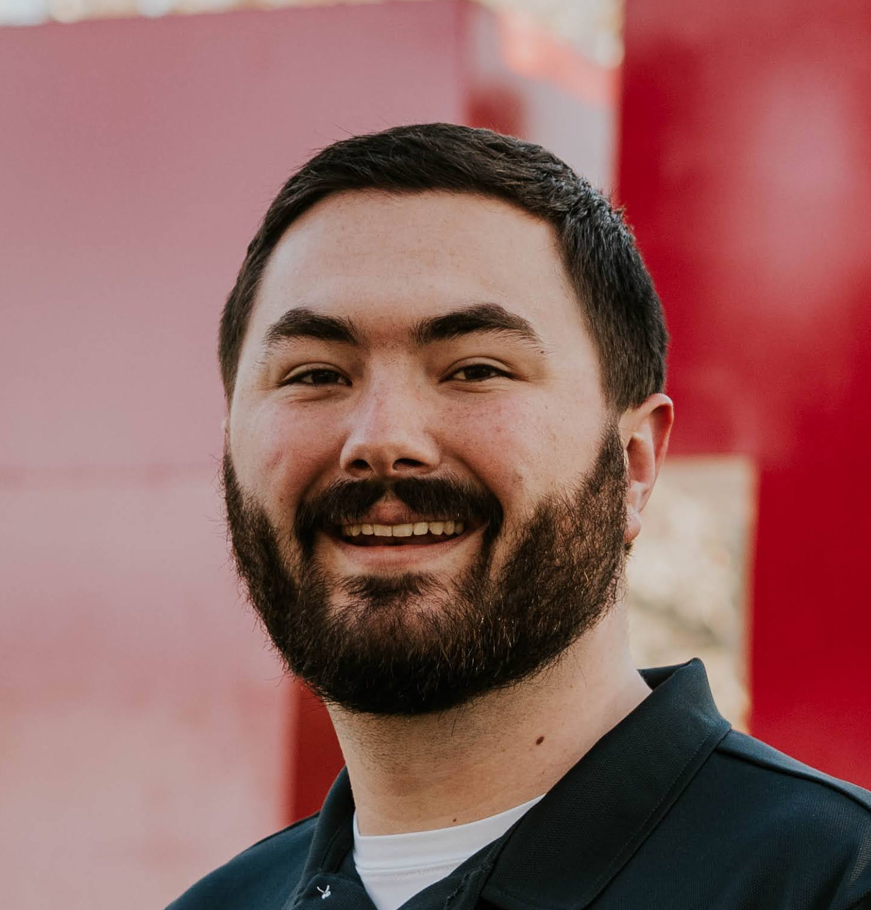
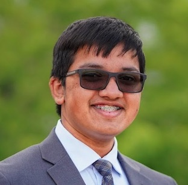

I am an Computer Science and Math minor who is graduating in Spring 2026. I am one of the members of the FreezeTag capstone project. Currently, I am an undergraduate research assistant in the Futures3 lab under Stefan Nagy. My research focuses on building tools for use in fuzzing the Linux kernel. After I graduate, I am planning to continue my current research for a few months before applying a full-time job in software development. Before research, I was a teaching assistant for the CS 3500 introduction to software engineering course. Outside of work and school, I enjoy mountain biking, canyoneering, and exploring the outdoors in general.
you can reach me at ethanwaynecollier@gmail.com or find me on LinkedIn. For examples of my work, check out my GitHub

I am an Honors Computer Science and a Physics double major who is graduating with both degrees in Spring 2026. I am affiliated with the FreezeTag capstone project, as well as with the "Comparing Development Processes Between Computer Science Capstone Courses and Industry Teams" bachelor's thesis submitted to the University of Utah Honors College. After I graduate, I will be joining Lucid Software as a Software Engineer I. Previously, I have completed internships with Lucid as well as the Department of Defense, and I have worked as a teaching assistant for the Kahlert School of Computing while in school. Outside of work and school, I love to explore the outdoors and enjoy the beautiful Utah scenery. I watch lots of college football, do some data science as a hobby, and occasionally play video games.
I prefer to be contacted through my LinkedIn.

I am an Honors Computer Science major with a minor in Mathematics, graduating in Spring 2026.
I'm affiliated with the FreezeTag capstone project, and writing a thesis based on it for the Honors
bachelor's called "FreezeTag: Design, Implementation, and Challenges in Open Source".
I'm interested in backend development, open source software, and protocol/language design. I've
gained experience with all three through this capstone project,
and I have professional experience with Linux system administration as well as writing CI pipelines
and automated browser integration tests.
Aside from computer science, I've picked up an interest in law and might be spending the next 3
years at a law program (depending on how applications shake out).
Outside of school, I enjoy hobbyist programming, reading science fiction novels, messing with the
configuration on my Linux system, and cooking all the time.
I prefer to be contacted via email -
maxvonpetersen@gmail.com
You can also find me on GitHub and LinkedIn

I'm a senior at the University of Utah double majoring in Computer Science and Applied Mathematics, with a Psychology minor, on a BS/MS track. I'll finish my bachelor's degrees in May 2026 and wrap up my master's in computer science by Spring 2027. I'm affiliated with the FreezeTag capstone project, and my Honors College thesis is also based on it, titled "FreezeTag: Designing and Building a Self-Hosted Image Management Application."
On the academic side, I've spent two years TAing CS 3100 (Models of Computation), pursued HCI research, and completed an internship at Select Portfolio Servicing doing data analytics and software development work. After graduation I'm keeping my options open across software engineering, startups, and academia.
Outside of school I play a lot of video games, listen to a lot of music, and occasionally try to compose some of my own.
You can reach me at sathya@tadinada.com, or find me on GitHub and LinkedIn.
